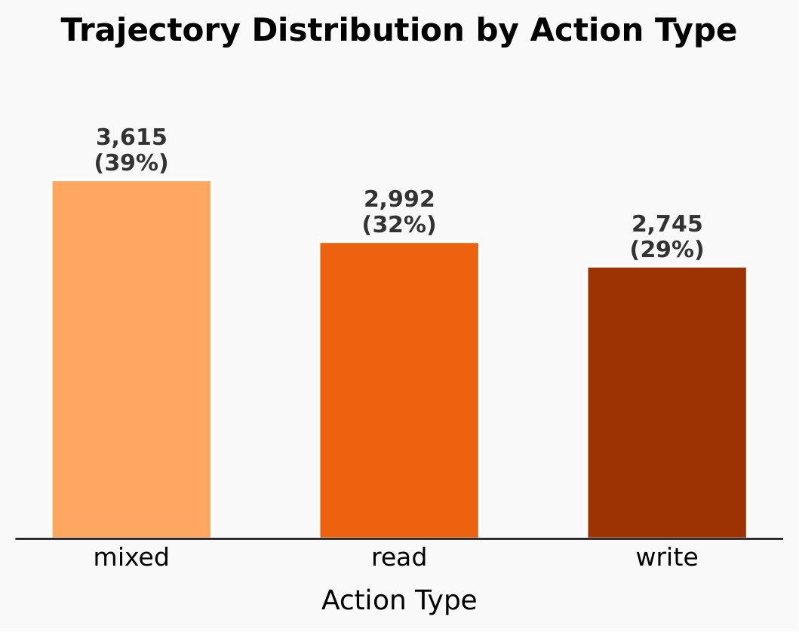

训练API调用型大语言模型智能体需要海量高质量的轨迹数据。然而，大规模收集此类数据通常需要具备可执行API和真实预填充后端数据库的完整环境，这造成了严重的可扩展性瓶颈。
近期的合成数据生成工作也都假设可以访问完整的可执行环境，环境创建与数据合成之间的紧密耦合造成了主要的可扩展性瓶颈。
Apple提出了一个基本问题：我们能否在完全不构建底层环境的情况下生成高质量的智能体轨迹数据？
核心猜想是：经过海量世界知识预训练的现代LLM可以作为动态数字世界模型。给定API规范、输入参数、任务指令和先前交互历史作为上下文，LLM可以合成模拟真实环境反馈的真实执行结果，准确反映底层状态变化。
ESAT（Environment-Free Synthetic Agentic Trajectory）生成流水线仅使用API规范作为输入，分三个阶段运行：
第一阶段：任务合成。LLM生成可由目标API解决的多样化真实任务，采用分桶生成和基于逆频率的采样策略确保覆盖均衡，并用基于LLM的批评器过滤无效任务。任务随后被重写为简洁的意图级请求以反映真实用户需求。
第二阶段：轨迹合成。将教师智能体与基于LLM的API模拟器配对。当教师迭代发出API调用来解决任务时，模拟器使用用户任务和先前模拟历史作为上下文，即时无缝生成连贯的环境反馈。模拟器遵循四大核心规则：数据一致性、数据多样性、数据真实性和模式合规性。
第三阶段：轨迹过滤。LLM裁判评估生成的轨迹的正确性、完整性和冗余性，丢弃次优样本以确保高保真训练数据集。每个轨迹被多次判断，只保留具有多数积极裁决的轨迹。
在AppWorld和OfficeBench两个具有挑战性的基准上的评估显示了显著的性能提升：
AppWorld基准：在从1.7B到27B参数的模型范围内，ESAT数据带来了最高50.5% 的性能提升。值得注意的是，使用ESAT数据训练的模型优于使用从真实AppWorld环境收集的训练任务轨迹训练的模型。
OfficeBench基准：ESAT数据带来了5.2-60.5% 的显著提升，Qwen3-4B和Qwen3.5-4B等较小模型的性能能够超过大得多的Nemotron-3-120B和GPT-4o模型。
知识蒸馏效果：Qwen3.5-27B模型的性能与大得多的GLM-5.1-FP8教师模型相当（差异<3%），证明复杂的 API 调用能力可以使用纯合成、无环境的数据迁移到更小的模型。
API模拟器质量分析显示，对于使用AppWorld API生成的1K条成功轨迹（包含约27K个模拟API调用），GPT-5.1作为裁判评估模拟器为93.7% 的调用生成了有效响应。
模拟失败率随响应长度增加而上升：500 token以下为2-3%，500-1K范围达到8%，1K-2K token达到18%，超过2K token达到23%。这种趋势可能是由于GLM-5.1-FP8模型的固有局限性，可通过使用更强大的前沿模型来解决。

LLM裁判质量方面，Gemini-3.1-Pro与真实环境正确性的相关精确率达95.2%，与人类注释者的总体一致性为95%，Cohen's kappa为0.90。
ESAT与ToolAlpaca、ToolACE和Nemotron等现有合成API调用数据集存在本质区别：这些数据集针对简单的API调用场景，不建模有状态环境，它们的实例不需要在不断变化的环境状态上进行协调的读写序列。
相比之下，ESAT的模拟器充当有状态的数字世界模型，在任务内的所有API调用中保持一致的虚拟状态。
实验结果清晰表明：在ToolAlpaca和ToolACE数据集上微调模型产生的性能与相应的零样本准确率相似或更差，而在Nemotron数据集上微调仅在某些情况下带来边际性能提升。相比之下，在ESAT数据集上训练在两个基准上都带来了显著的性能提升。
参考：https://arxiv.org/abs/2607.16900